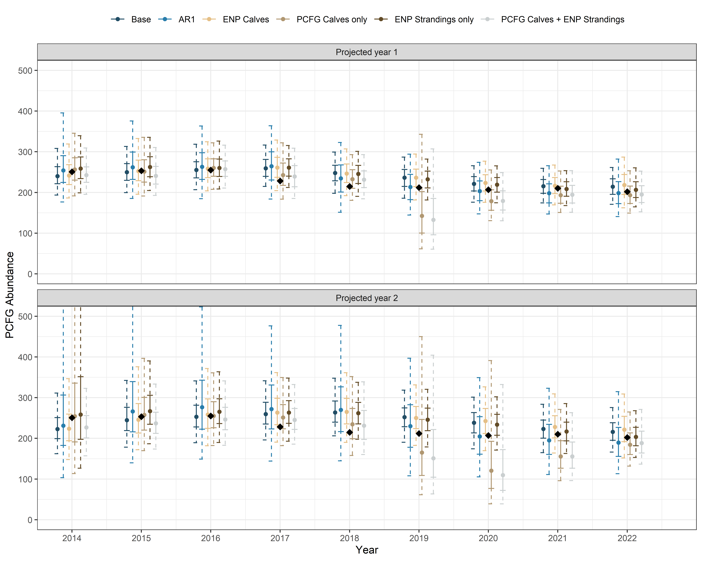
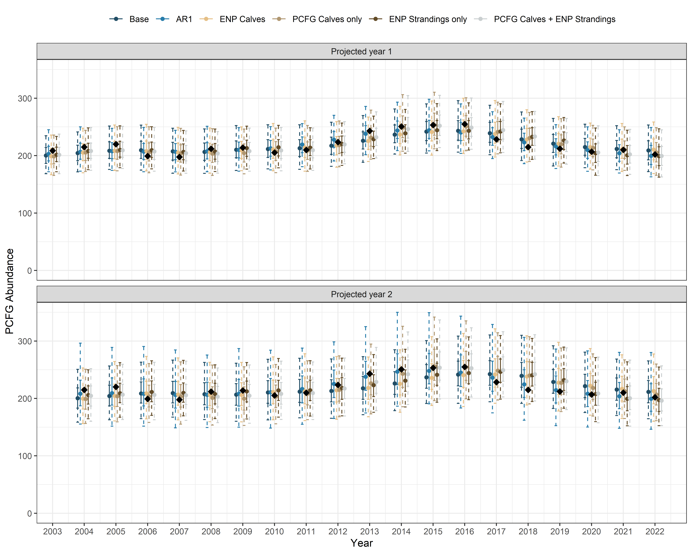
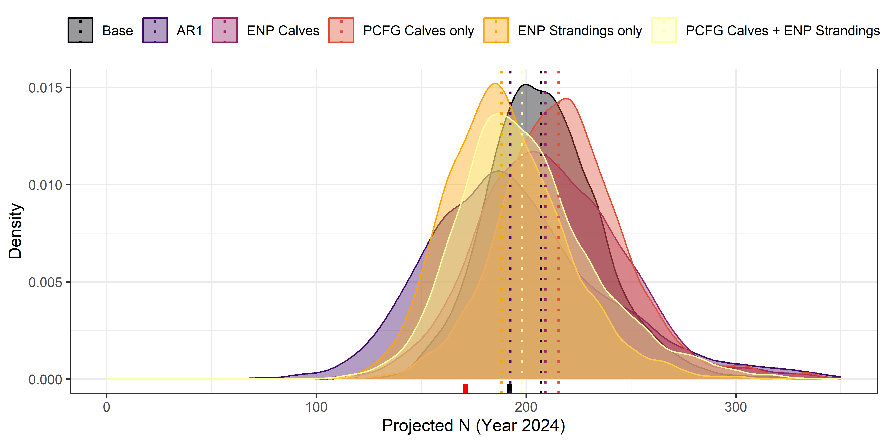

| Model | Variable | Mean | Median | SD | Lower CI | Upper CI | Rhat | ESS_bulk |
|---|---|---|---|---|---|---|---|---|
| ENP Calves | \(\beta_{Calves}\) | -0.004 | -0.004 | 0.036 | -0.064 | 0.055 | 1.000 | 1447.6 |
| PCFG Calves only | \(\beta_{Calves}\) | 0.021 | 0.020 | 0.020 | -0.010 | 0.055 | 1.000 | 2918.1 |
| ENP Strandings only | \(\beta_{Strandings}\) | -0.002 | -0.002 | 0.001 | -0.004 | 0.001 | 1.000 | 2198.9 |
| PCFG Calves + ENP Strandings | \(\beta_{Calves}\) | 0.016 | 0.015 | 0.020 | -0.015 | 0.049 | 1.001 | 2505.2 |
| PCFG Calves + ENP Strandings | \(\beta_{Strandings}\) | -0.001 | -0.001 | 0.002 | -0.004 | 0.001 | 1.001 | 1934.6 |
A state-space model for projecting population abundance
Model results
Coefficient estimates
Table 1 provides \(\beta\) coefficient estimates for models where coefficients for \(\lambda\) were estimated. Lower CI and Upper CI correspond to the lower and upper 95% credible intervals. \(Rhat\) values less than 1.01 indicate effective mixing within and across chains, producing reliable and consistent estimates for the parameters. \(ESS\) is the effective sample size and is an indicator of chain sampling efficiency. Here, \(ESS\) values greater than 300 indicate sufficient sampling has been achieved.
Leave-one-out Cross Validation (LOO)
Table 2 provides estimates of model fit using an information criterion (leave-one-out information criterion; looic) based on leave-one-out cross validation. Models with the lowest \(looic\) value are considered the best fitting model given the time series of abundance data used to fit the model. \(\Delta looic\) represents the difference in \(looic\) relative to the model with the lowest \(looic\).
| Model | elpd_loo | elpd_loo_se | p_loo | p_loo_se | looic | looic_se | deltaLooic |
|---|---|---|---|---|---|---|---|
| AR1 | 25.59 | 0.82 | 2.24 | 0.50 | -51.17 | 1.65 | 0.00 |
| PCFG Calves + ENP Strandings | 24.68 | 0.76 | 2.86 | 0.51 | -49.35 | 1.52 | 1.82 |
| PCFG Calves only | 24.57 | 0.67 | 3.02 | 0.59 | -49.13 | 1.34 | 2.04 |
| ENP Strandings only | 24.44 | 0.79 | 2.88 | 0.45 | -48.89 | 1.57 | 2.28 |
| Base | 24.29 | 0.70 | 3.11 | 0.62 | -48.57 | 1.39 | 2.60 |
| ENP Calves | 23.86 | 0.74 | 3.37 | 0.54 | -47.71 | 1.48 | 3.46 |
Predictive accuracy with retrospection
Given that prediction was the primary objective of this exercise, we evaluated the ability of each model to retrospectively predict a “future”, known population abundance using the PCFG abundance time series from [@harrisPCFG2022]. Predicting future states, or “forecasting”, is notoriously challenging particularly as we project further into the future. However, within this system, data gaps of one or two years represent the most plausible scenarios managers are likely to encounter, providing the basis for our evaluation. In addition, we anticipated relative performance within model sets was likely to vary as we projected further into the future. Thus, in order to document a potential shift in model support in relation to projection length, we evaluated predictive performance when projecting one and two years separately. Finally, we evaluated predictive performance using models fitted to both truncated and complete abundance time series. The latter provides the best available knowledge of the system for model fitting, but might bias retrospective evaluations of predictive performance due to information “spillover” from future observed population states. The former can become data limited and select for overly simplistic models.
All time series used in model fitting started with estimates from 2002, but varied in their end point. In the case of truncated times series, we fit each of the six specified models to multiple time series with varying end points from 2013 through 2021, providing projected abundance estimates for years 2014 through 2022. Notably, we evaluated endpoints between 2006 and 2012, but these shorter time series were inadequate for model convergence. In the case of the complete time series, we fit all seven models to a single time series representing abundance data from 2002 through 2022. Model parameters were then used to retrospectively project abundance forward one or two years from 2002 through 2021, providing projected abundance estimates for years 2003 through 2022.
In all cases, projected estimates were then compared to “observed” abundance in the same year using residual sum of squares (RSS), 60% and 95% credible intervals, and whether an estimate dropped below threshold resulting in a presumed hunt closure. Predictive fits were summarized by one or two year projection lengths.
Model fits derived from truncated time series
The following tables show predictive performance statistics by model specification when predicting one (Table 3) or two years forward (Table 4) from all data years between 2013 and 2021. RSS is the residual sum of squares.
| Model | Mean RSS | Mean Percentile (N) | Median Percentile (N) | Mean Prop Below Threshold (N) | Median Prop Below Threshold (N) | Number of Closures (Nmin) | Number of Closures (N) | Number of Closures | Closure Years |
|---|---|---|---|---|---|---|---|---|---|
| AR1 | 273.9 | 0.4 | 0.464 | 0.195 | 0.143 | 0 | 0 | 0 | |
| ENP Strandings only | 320.1 | 0.3 | 0.374 | 0.078 | 0.030 | 0 | 0 | 0 | |
| Base | 355.5 | 0.3 | 0.297 | 0.053 | 0.022 | 0 | 0 | 0 | |
| ENP Calves | 396.6 | 0.3 | 0.280 | 0.064 | 0.037 | 0 | 0 | 0 | |
| PCFG Calves only | 501.2 | 0.5 | 0.524 | 0.285 | 0.068 | 2 | 2 | 2 | 2019,2020 |
| PCFG Calves + ENP Strandings | 657.8 | 0.6 | 0.639 | 0.283 | 0.048 | 2 | 2 | 2 | 2019,2020 |
| Model | Mean RSS | Mean Percentile (N) | Median Percentile (N) | Mean Prop Below Threshold (N) | Median Prop Below Threshold (N) | Number of Closures (Nmin) | Number of Closures (N) | Number of Closures | Closure Years |
|---|---|---|---|---|---|---|---|---|---|
| ENP Strandings only | 804.6 | 0.3 | 0.361 | 0.104 | 0.058 | 0 | 0 | 0 | |
| Base | 835.5 | 0.3 | 0.295 | 0.071 | 0.053 | 0 | 0 | 0 | |
| PCFG Calves only | 947.5 | 0.6 | 0.492 | 0.369 | 0.203 | 4 | 4 | 4 | 2019,2020,2021,2022 |
| ENP Calves | 958.6 | 0.3 | 0.284 | 0.093 | 0.085 | 0 | 0 | 0 | |
| AR1 | 1162.6 | 0.4 | 0.417 | 0.259 | 0.255 | 3 | 0 | 3 | 2020,2021,2022 |
| PCFG Calves + ENP Strandings | 1267.8 | 0.7 | 0.704 | 0.372 | 0.162 | 4 | 4 | 4 | 2019,2020,2021,2022 |
Figure 1 depicts the predictive fits when abundance was projected forward one (top panel) or two years (bottom panel) for all model specifications in a truncated time series context. Observed abundance estimates for years 2014 through 2022 are represented as back diamonds, median model predictions are represented by points, 60% credible intervals are depicted as solid error bars, and the 95% credible intervals are depicted as dashed error bars.

Model fits derived from full time series
The following tables show predictive performance statistics by model specification when predicting one (Table 5) or two years forward (Table 6) for all data years from 2002 through 2021.
| Model | Mean RSS | Mean Percentile (N) | Median Percentile (N) | Mean Prop Below Threshold (N) | Median Prop Below Threshold (N) | Number of Closures | Closure Years |
|---|---|---|---|---|---|---|---|
| AR1 | 47.4 | 0.519 | 0.565 | 0.118 | 0.130 | 0 | |
| PCFG Calves only | 64.1 | 0.518 | 0.513 | 0.142 | 0.161 | 0 | |
| PCFG Calves + ENP Strandings | 69.1 | 0.522 | 0.573 | 0.135 | 0.146 | 0 | |
| ENP Strandings only | 89.5 | 0.518 | 0.569 | 0.122 | 0.113 | 0 | |
| Base | 92.8 | 0.520 | 0.520 | 0.114 | 0.127 | 0 | |
| ENP Calves | 93.8 | 0.527 | 0.542 | 0.126 | 0.148 | 0 |
| Model | Mean RSS | Mean Percentile (N) | Median Percentile (N) | Mean Prop Below Threshold (N) | Median Prop Below Threshold (N) | Number of Closures | Closure Years |
|---|---|---|---|---|---|---|---|
| AR1 | 43.1 | 0.503 | 0.536 | 0.195 | 0.236 | 0 | |
| PCFG Calves + ENP Strandings | 141.8 | 0.507 | 0.528 | 0.178 | 0.226 | 0 | |
| PCFG Calves only | 151.4 | 0.506 | 0.507 | 0.186 | 0.177 | 0 | |
| ENP Strandings only | 176.4 | 0.509 | 0.576 | 0.154 | 0.154 | 0 | |
| Base | 217.7 | 0.509 | 0.461 | 0.152 | 0.177 | 0 | |
| ENP Calves | 221.1 | 0.512 | 0.459 | 0.165 | 0.183 | 0 |
Figure 2 depicts the predictive fits when abundance was projected forward one (top panel) or two years (bottom panel) for all model specifications. Observed abundance estimates for years 2003 through 2022 are represented as back diamonds, median model predictions are represented by points, 60% credible intervals are depicted as solid error bars, and the 95% credible intervals are depicted as dashed error bars .

Model-predicted population trends
Figure 3 depicts the predicted trends in PCFG gray whale abundance by state-space model specification during data years (2002 - 2022), as well as abundance projections for two years beyond (through 2024). The black points and red diamonds correspond to the mean PCFG abundance and Nmin, respectively, and were derived from a mark-resight population model published in [@harrisPCFG2022]. The solid error bars represent the 95% confidence intervals on mean estimates form the mark-resight model. The solid black trend line represents the state-space model predicted mean abundance. The lighter gray ribbon represents the 95% credible interval with the darker ribbon reflecting the 60% credible interval, with the lower bounds capturing estimated Nmin.

Model-specific predictions for Yfinal + 2
